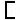
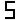
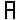
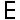
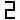
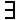

| MODE PROGRAMME | |
| 1) + OU - POUR CHANGER DE PARAMÈTRE | |
| 2) DEF POUR VISUALISER LA VALEUR DU PARAMÈTRE | |
| 3) + OU - POUR INCRÉMENTER LA VALEUR | |
| 4) PRG POUR SORTIR DU MODE PROGRAMME | |
| LISTE DES PARAMÈTRE | |
 |
Fin de course oleo 00=normal ou 01=défaut |
| Tempo priorité cabine unité en seconde | |
 |
Tempo stat porte ouverte unité en seconde |
 |
Tempo retour auto unité en minute |
| Tempo défaut de pêne unité en seconde | |
 |
Vitesse révision 00=PV ou 01=GV |
| Porte A 00=H/T ou 01 S/T | |
| Porte B 00=H/T ou 01=S/T | |
| VALEUR DU COMPTEUR | |
| 00 | |
 |
00 |
 |
00 |
| 00 | |